目前台灣年輕型失智症患者估計人數
記者陳少凡、陳雙、顏貝恩、黃暐喬報導
年輕就失智，
生活卻還得繼續
多數年輕型失智症患者仍處於工作與承擔家庭責任的階段。疾病改變了他們的能力，社會與職場卻往往在理解之前，先把他們排除在外。
Young 記憶會館現場｜攝影／採訪團隊
往下閱讀
第一視角體驗
嘗試進入患者的日常
讓我們嘗試進入年輕型失智症患者的第一視角。接下來這支 POV 影片，會帶你看見他們在日常裡可能遇到的混亂：熟悉的地方突然變得陌生、剛說過的話需要重新確認，原本簡單的事情也變得不再直覺。
以上行為參考採訪年輕型失智症患者的照顧人員所述患者行為。
若影片無法播放，前往 YouTube 觀看失智症，
不只是老人的疾病
只要在65歲以前發病，就屬於年輕型失智症（Young-onset dementia）。
它不是一種新的疾病，而是依發病年齡分類，包含阿茲海默症、額顳葉型失智症、血管型失智症及部分可逆性失智症。
不同病因影響的大腦區域不同，因此症狀、病程與照顧方式也不相同。
失智症盛行率；推估 2021 年台灣有 11,324 人
2021 年底推估共 312,166 人，占全國人口 1.34％
台灣平均每 74 人，就有 1 人是失智者
＊ 資料來源：國際失智症協會；內政部 2021 年 12 月底人口統計；挪威 2019 年研究之 45–64 歲失智症盛行率推估。
同樣叫失智，
受影響的位置不一樣
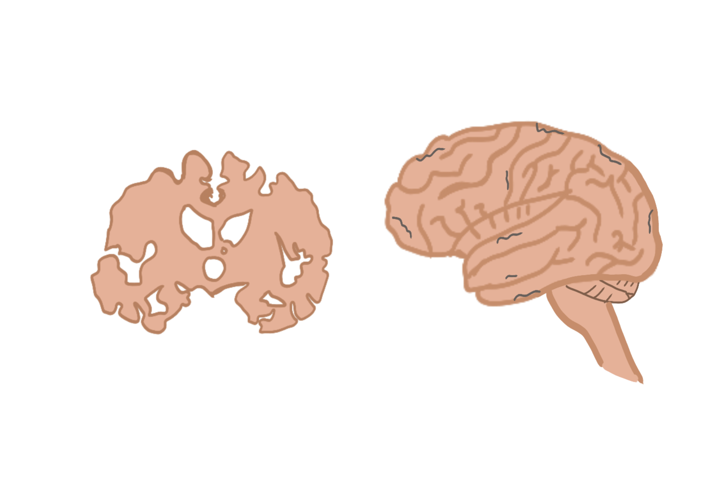
海馬迴、內嗅皮質形成新記憶的重要區域
大腦皮質後期影響語言、推理與社會行為
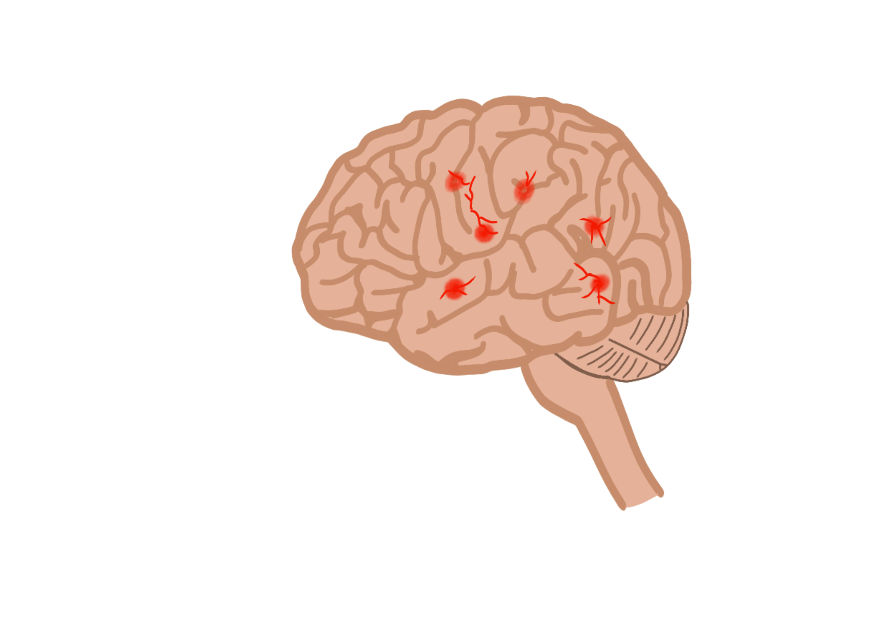
腦血管損傷血流受阻使腦組織缺氧
損傷位置不固定症狀依位置與範圍而異
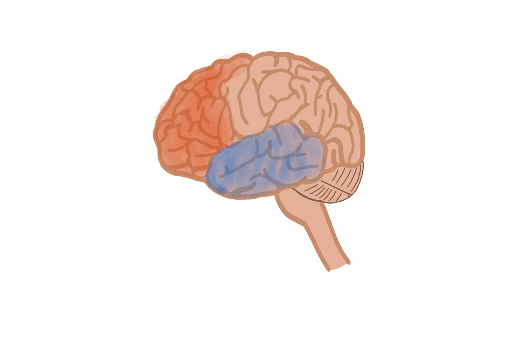
額葉判斷、計畫、抑制與社會行為
顳葉語言、語意、記憶與情緒
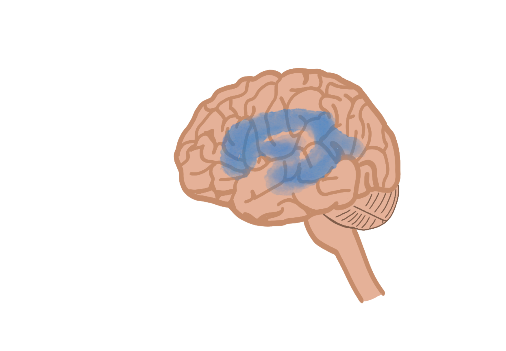
腦室系統腦脊髓液在此循環
腦室擴大可能壓迫周邊腦組織
阿茲海默症
疾病通常先破壞與記憶有關的神經連結，包括海馬迴與內嗅皮質；之後逐漸擴及掌管語言、推理及社會行為的大腦皮質。
近期記憶方向感語言推理判斷
血管性失智症
腦中風或小血管病變會減少腦部血流，損害可能散落在不同腦區。症狀取決於受損的位置與大小，也可能在一次次血管事件後呈階梯式惡化。
注意力計畫組織判斷語言或動作
額顳葉型失智症
額葉與顳葉的神經細胞受損、腦葉逐漸萎縮。早期未必先出現健忘，反而可能是人格與社交行為改變，或說話、理解語意變得困難。
人格行為情緒控制語言執行功能
可治療的失智症狀
「可逆性失智症」不是單一病名，而是一群可能改善的原因。圖中以正常壓力水腦症為例：腦室因腦脊髓液累積而擴大，可能同時出現走路不穩、認知下降與尿失禁。
憂鬱症、藥物副作用、甲狀腺功能異常、維生素 B12 缺乏等也可能造成類似失智的表現，應由醫療團隊完整評估。
及早鑑別處理病因症狀可能改善
圖像為腦區與病理概念示意，不等同個別患者的影像診斷。資料參考： 美國國家老化研究院（阿茲海默症）、 美國中風協會（血管性失智症）、 美國國家老化研究院（額顳葉型失智症）、 美國國家神經疾病暨中風研究院（正常壓力水腦症）。
一些好像很簡單的事情，
對他們來說是困難的
試著完成一個看似簡單的任務：畫出有透視感的方塊。完成後，可以看看年輕型失智症患者畫出來的樣子。
01
請複製這個圖形。
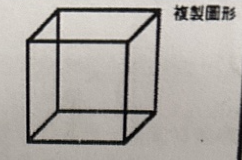
患者畫出的結果
以下是年輕型失智症患者畫出來的樣子
對部分患者而言，線條、空間、順序與手眼協調，都可能因認知功能改變而變得困難。
透視方塊
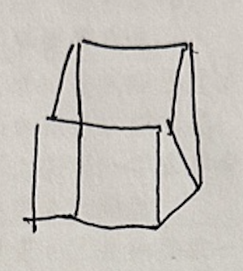
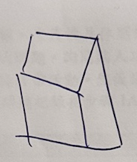
同樣是年輕型失智症。
有人忘了回家的路，有人失去說話能力，也有人直到被迫離開工作，才發現疾病早已改變人生。
年輕型失智症不一定先從忘記事情開始。有人失去時間感，有人難以控制語言與情緒，也有人逐漸無法做出過去熟悉的決定。
為了保護當事人，我們將名字抽換使用化名，有些也採用變聲處理。
沒有病識感：小華
我叫小華（化名），今年42歲。 我沒有遇到困難啊，我沒有中風啊， 我是中風然後血管型失智症。 可是我沒有症狀，沒有症狀， 因為中風的那個，腦袋也沒有差， 然後邏輯都沒有傷到， 語言能力也沒有傷到。
喪失語言能力：喜哥
我是喜哥（化名），年齡61歲。 XXXXXX （敲敲敲敲敲敲） （哭）
附註：患者無法用正常語言表達自己所想，有時會以不雅字眼、敲打桌面和哭來表達情緒。
被鄰居排擠：小威
我叫小威（化名），68年次，是 47 歲嗎？ （鄰居），有些人（對我）不太好， 不好只是，他們比較不會理我。 （那你會跟他們打招呼嗎？）會會會。
治療不是治癒，
而是讓生活繼續
目前，年輕型失智症並沒有單一的治療方式。它不是一種疾病，而是指65歲以前發病的失智症，因此治療必須回到個別病因與疾病類型。
若屬阿茲海默症型失智症，醫師可能使用膽鹼酯酶抑制劑或 NMDA 受體拮抗劑，協助改善或延緩認知功能退化；若是血管型失智症，治療重點則在控制血壓、血糖、血脂，降低再次中風與血管傷害的風險；若為額顳葉型失智症，目前藥物對病程的效果有限，照護上更仰賴行為支持、情緒穩定與生活安排。
除了藥物，非藥物治療也是失智症照護的重要一環。認知刺激、職能治療、運動、音樂、團體活動與生活訓練，目的不是讓患者「恢復原狀」，而是盡可能維持生活功能、延緩退化，並讓他們仍能與他人互動、參與日常。
但治療之外，年輕型失智症患者仍需要一種能繼續生活的方式。有人透過汽車雜誌延續對工作的熱情，有人用衣服顏色記住星期幾，也有人在散步與賞花之間，重新建立自己的日常。
資料來源：Alzheimer’s Society、NICE dementia guideline、衛福部失智症診療手冊、台大醫網留在身邊的
六件日常物品
點開圖片看故事細節雖然目前沒有能根治的療法，但每位年輕失智症患者都能找到自己的小確幸。
照顧資源
照顧資源有限，
照顧資源有限，
收案也有門檻
目前全台專門提供年輕型失智症服務的據點相當有限，主要僅有台北 Young 記憶會館與台中向上清活小屋兩處。據點透過分享對話、繪畫拼貼、觀影、瑜珈、音樂等課程，提供患者交流與維持認知功能的機會，也協助建立規律生活與人際互動。
「現在 CDR 一定要是 0.5 到 1 分才能收，如果是 2 分就不能收；另外，如果長照等級超過 3（包含 3），我們也沒辦法服務、不能收案。」王姿瓔說。
然而，年輕型失智症患者的需求，與高齡失智者並不相同。相較於高齡患者多以生活照顧為主，年輕患者通常仍具備一定生活自理能力，更需要的是維持社交參與、建立生活重心，以及延緩功能退化，因此據點設計的服務內容也有所不同。
除了據點數量有限，收案資格也成為患者取得服務的一大門檻。向上基金會長者服務督導王姿瓔表示，目前患者臨床失智症評估量表（Clinical Dementia Rating, CDR）須介於 0.5 至 1 分才能收案；若評估為 2 分以上，或長照等級達 3 級（含）以上，便無法接受服務。
CDR 量表：如何量化失智程度？
CDR（Clinical Dementia Rating，臨床失智評估量表）是臨床上用來評估失智程度的工具。它不是只看記憶力，而是從記憶、定向感、問題解決與判斷、社會事務處理、居家生活與愛好、自我照料能力六個面向，觀察一個人的認知與生活功能是否受到影響。
記憶力
定向感
問題解決與判斷
社會事務處理
居家生活與愛好
自我照料能力
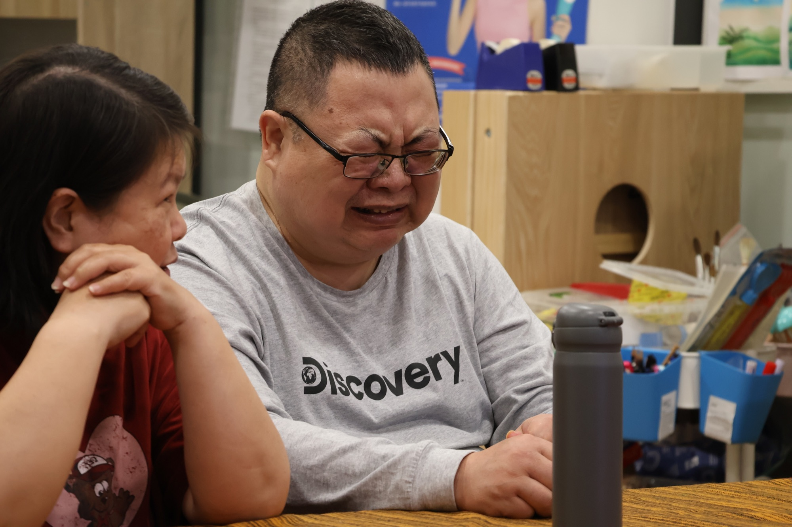
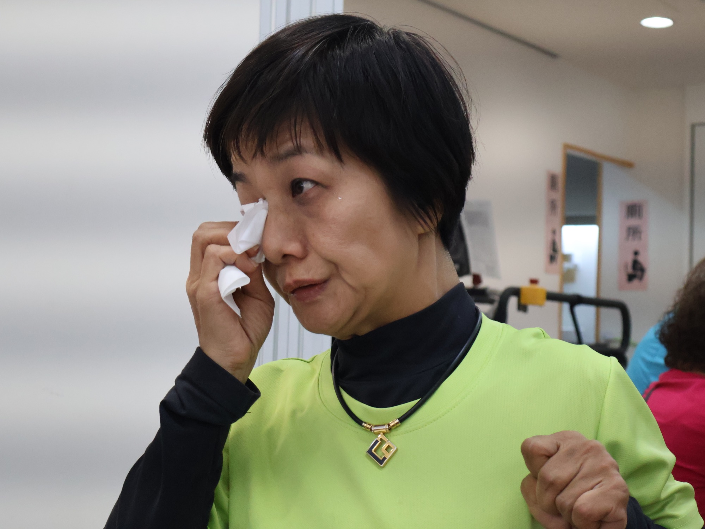
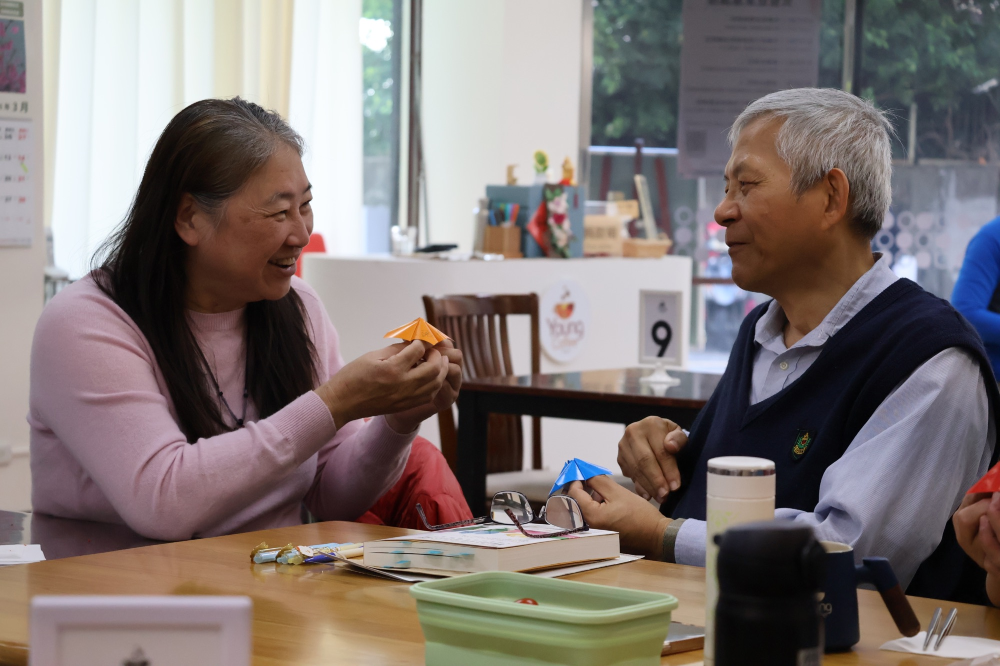

「在接受這個事情的過程中，心裡非常掙扎與疲憊，情緒也近乎崩潰。」
—— 喜哥妻子
向上清活小屋的
課程與陪伴
向上清活小屋的課程涵蓋分享與對話、繪畫與拼貼等手作活動、觀影、瑜珈與音樂課，透過多元體驗豐富患者的生活。據點也將做飯融入課程，讓失智症患者在實作中動手、動腦。即使過程中出現失誤、料理煎焦，課程更重視參與當下的投入與互動，讓患者從過程中獲得成就感與快樂。
向上清活小屋曾帶患者到高雄出遊。王姿穎提及：「那一次活動結束後，非常多的家屬告訴我們，那是他們生病後，第一次離開台中。」多數家屬不敢輕易帶患者外出，因為患者在行動與語言上較難自我控制，外出時常面臨他人異樣的眼光；加上照顧者多為配偶，若在公共空間找不到無障礙或身心障礙廁所，兩人甚至必須分開如廁，也增加患者走失的風險。
對照顧者而言，這類活動讓他們得以在長期高壓且循環的照顧日常中稍作喘息；對失智者而言，則是走出原有生活範圍、重新與社會互動的機會，也有助於延緩身心與認知功能的退化。
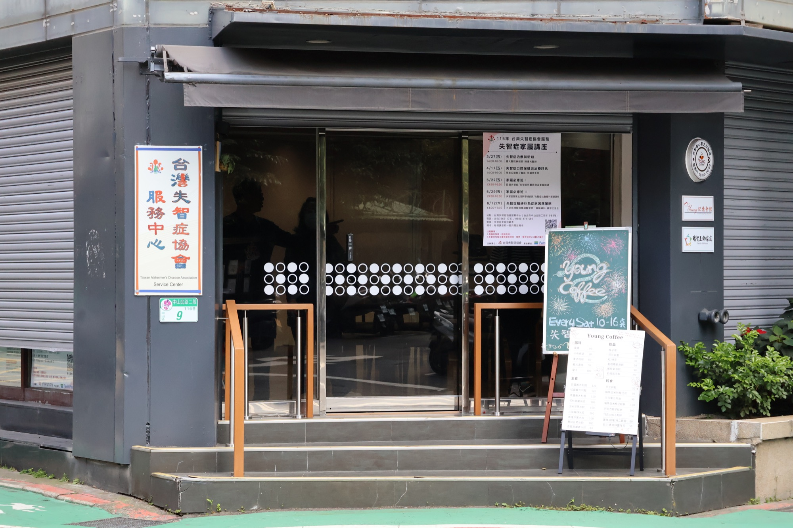
Young Coffee為臺灣唯一提供年輕型失智症患者工作的場所，為了減少患者的負擔，每次排班4小時，只在週六營業。
在咖啡坊裡，
重新被需要
在工作支持上，Young 咖啡坊每週開放一天，讓失智症患者參與咖啡廳內的運作。他們負責沖煮咖啡、點單與送餐等基本服務。雖然此活動不是真正進入職場工作，但在實際勞動過程中，他們得以重新建立與他人的互動連結；在與顧客交流的過程中，也逐步找回被需要的感受。
除此之外，政府目前也提供職業重建與職務再設計等措施，依據失智症患者的個別狀況，協助媒合返回職場。然而，實際成效仍有限。王姿穎指出，政府一直希望能出現失智症患者成功重返職場的案例，但截至目前，仍缺乏穩定的成功個案。雖然政府有專門媒合工作的管道，患者在職場的去留仍是企業端的決定。
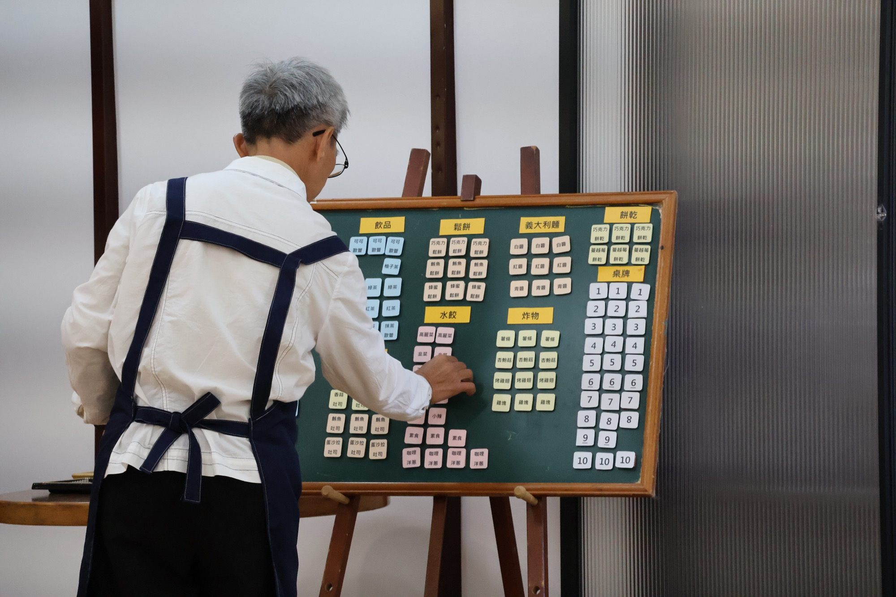
患者想工作，
社會準備好了嗎？
「我還是想要工作啊，但是他們都不希望我去公司上班。」—— 小華
多數年輕型失智症患者仍處於為事業打拚的年齡，因此工作權也成為他們面臨的重要議題。然而，目前台灣針對失智症患者的就業支持依舊相當有限。
臺北醫學大學高齡健康暨長期照護學系主任邱惠玲指出，現行雖然已有職務再設計、失智者就業推動計畫及失智友善職場等措施，但實務上，企業普遍缺乏對年輕型失智症的正確認知，患者往往在確診前便因工作表現下降而遭到資遣。就業媒合機制也多以肢體障礙者為主，較少針對認知障礙者建立穩定的支持模式。
邱惠玲也表示，失智症患者並非完全失去工作能力，而是需要透過適當的職務調整與支持。例如將工作流程拆解為簡單的步驟、降低工作的複雜度，或運用數位工具進行提醒，都有助於患者發揮工作能力。然而，由於年輕型失智症患者的學習能力會隨病程逐漸下降，因此相關職務設計與職務訓練也需要更具彈性與專業性。
中山醫學大學醫學系副教授郭慈安則指出，勞動部需要建立年輕型失智症患者的職務再設計指引及專業人才培訓。目前企業因追求效率而缺乏聘用意願，政府也應加強對企業的宣導與支持，提升業界對年輕型失智症的理解，讓仍具有工作能力的患者有機會留在職場。
日本年輕型失智症支援
確診之後，支援如何一步步接上？
以下內容根據日本厚生勞動省公開資料整理，將原始支援架構轉譯為「確診後的支援流程」與「三大支援面向」，重點不在單一角色，而在患者確診後如何進入多元支援、並隨生活情況持續調整。
確診
醫療院所診斷為年輕型失智症。
初步評估
評估患者的症狀、工作狀態、家庭經濟與生活需求。
制定支援方向
依照個別狀況，判斷優先處理工作、生活或家屬支持。
進入支援服務
連結就業支援、生活支援、家屬支援等資源。
持續追蹤與調整
隨病程與生活狀況變化，重新調整支援內容。
日本的支援怎麼接住年輕失智症患者？
日本在支援的方向會分成就業支援、生活支援和家屬支援。就業支援將評估患者適合留在原職場、轉職或是進入福祉性就業；生活支援則是提供社區活動、日間照護和生活服務等；而家屬支援則會提供家屬諮商、心理支持和福利與經濟支援。然而台灣目前只停留在生活和家庭支援方面，就業支援部分仍還在規劃中。
日本的年輕型失智症就業支援，重點不是讓患者確診後立刻離開職場，而是先評估他還能做什麼。若患者仍有工作能力，會優先協助留在原職場，例如調整工作內容、減少工時、改變職務分配，或讓同事與主管了解如何配合。若原本的工作已經太困難，則會轉向公共就業服務、職業訓練或障礙者就業，協助患者找到比較符合目前能力的工作。
當患者難以進入一般職場時，日本還有福祉性就業制度，常見的是 A 型與 B 型。A 型適合仍具備一定工作能力、能在支持下穩定上下班的人，通常會簽訂雇用契約，收入也較接近正式工作。B 型則適合暫時無法簽雇用契約、需要更彈性節奏的人，工作內容通常較簡單，收入多為工賃，重點不只是賺錢，而是維持生活節奏、社會參與與自我角色。
A 型與 B 型的差別，並不是按照患者是哪一種失智症來分，而是按照他目前的功能狀態判斷。評估時會看患者的認知能力、體力、生活自理能力、能否固定出勤、是否能理解工作流程、是否需要高度協助等。簡單來說，若患者還能穩定工作，就可能進入 A 型；若需要更彈性、支持密度更高的安排，就比較適合 B 型。這套制度的核心，是讓年輕型失智症患者在能力逐漸變化的過程中，仍能保有工作、生活節奏與社會連結。
日本案例：Kizunaya 年輕型失智症農場
奈良地區的 Kizunaya 農場結合日照與輕度農務，讓年輕型失智者在可負擔的工作節奏中重新參與生活。現場觀察中，有患者一開始只想休息，等精神恢復後才加入活動，還在同伴鼓勵下唱起演歌、一起野餐。這樣的安排重點不只是完成工作，而是讓人在被尊重的節奏裡，慢慢找回自尊與參與感。
京都
53 家
純工作支援，協助康復與保有社會角色
台灣
2 家
生活支援據點
僅用京都府數據與全台對比，日本的年輕型失智症支援較強調患者確診後仍能保有工作與社會角色；台灣目前的支持多集中於醫療診斷與長照資源，職場轉銜與工作支持仍有補強空間。
資料來源：日本厚生勞動省《若年性認知症支援コーディネーターのためのサポートブック》及相關公開資料整理。